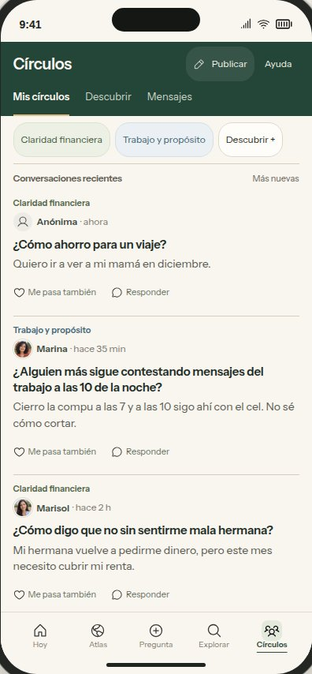
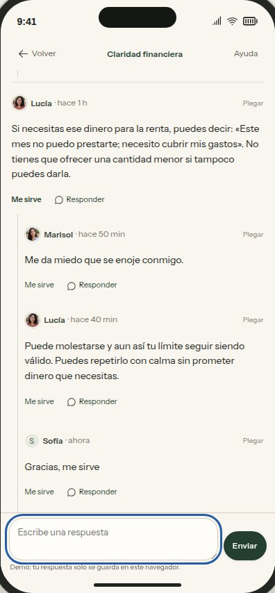
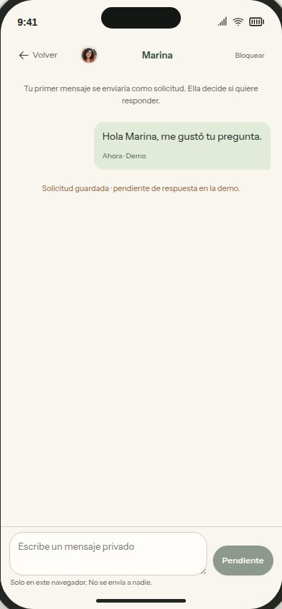
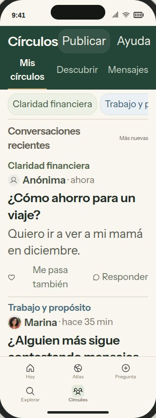

Círculos: revisión del prototipo de ChatGPT
26 oct 2026. Revisé la carpeta source de “Elara_Circulos_Claude_Handoff”, paso a paso en Chromium a 390 y 320 px, en tamaño normal y texto grande. Es un prototipo local: nada de esto está validado con usuarias.
Vale la pena conservarlo
- La densidad compacta. La jerarquía sale del peso, los divisores y el color apagado, no de títulos enormes.
- Las fotos solo en las mujeres, sin ilustraciones de temas.
- «Responder», «Conectar» y «Mensaje» se ven como tres cosas distintas, y las anónimas no tienen perfil.
- Al publicar desde el inicio hay que elegir el círculo a propósito.
- Los hilos anidados con línea a la izquierda, y las etiquetas honestas de demo.
Los 3 problemas más importantes (todos corregidos)
- «Volver» llevaba al lugar equivocado. Si abrías una conversación desde Mis círculos, «Volver» te dejaba dentro del círculo, no donde estabas, y la lista empezaba de nuevo desde arriba. Ahora vuelve a la pantalla de origen y a la misma altura de la lista.
- El aviso personal no decía la verdad. Decía «Lucía te respondió», pero Lucía le respondió a Marisol, no a ti. Ahora dice «Lucía respondió en una conversación que sigues».
- Tu identidad cambiaba. Tus publicaciones salían como «Sofía» y tus respuestas como «Tú». Ahora es «Sofía» en las dos, y sigue sin abrir un perfil propio.
Otros cambios
| Tipo | Cambio |
|---|
| Error | Una publicación nueva repetía el título como vista previa. Ahora la vista previa es el resto del texto, o nada si solo hay una frase. |
| Navegación | Un chat abierto desde un perfil ahora vuelve a ese perfil, no a Mensajes. |
| Datos | «Nuevo mensaje» solo muestra a mujeres de tus círculos. |
| Accesibilidad | Los nombres medían 28 px de alto al tocarlos. El área de toque ahora se extiende 8 px arriba y abajo, sin mover nada del diseño. |
| 320 px + texto grande | Los botones del encabezado y de la barra ya no se salen de la pantalla. El título de la barra se acorta con «…». |
| Código | Quité el compositor viejo en ventana (no se podía usar). No quedan referencias a él. |
Revisado (25 pruebas, todas pasan)
Volver desde el inicio, desde un círculo y desde el aviso. El borrador y la destinataria sobreviven a votar y ordenar. Una respuesta anidada queda bajo la persona correcta, y ordenar no borra respuestas hijas. Publicar está desactivado sin círculo y elegir uno no borra el texto. Las anónimas no tienen enlace de perfil. Conexión pendiente. Una solicitud pendiente bloquea el segundo mensaje. El chat vuelve al perfil. El historial de Lucía sigue después de recargar. Bloquear y desbloquear. El área de toque de los nombres. Nada se sale a 320 px con texto grande.
No revisado o pendiente
- Teléfono real: el teclado de iOS, VoiceOver y TalkBack, Dynamic Type, y el orden de lectura.
- Recibir y aceptar solicitudes, quitar una conexión, recibos de lectura, moderación y reportes. Nada de esto existe en el prototipo.
- «Más útiles» y «Nuevas» usan datos de ejemplo. Las horas son fijas.
- La frase «Tus chats con Elara… no se comparten aquí» no está respaldada por ningún sistema. Confirmen con el equipo antes de dejarla.
- Hay que regenerar el archivo «Standalone», porque solo edité la carpeta source.
- Los textos en español siguen siendo borrador para Alejandra.

Inicio, 390 px

Respuesta anidada bajo Marisol

Solicitud pendiente

320 px con texto grande